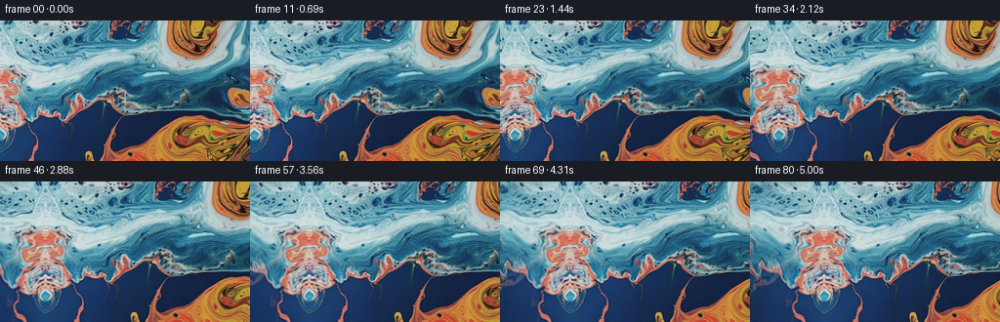
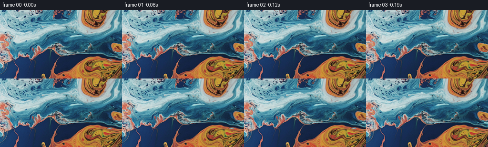

← 本轮 smoke 总览traex/GPT-5.6-Sol · 0001_s0
text · 256×144 · 16.0 FPS · 81 帧 · 状态 complete · 输出 tokens 8623
原始任务a close up of a blue and orange liquid, camera pans left
当前保存结果
已保存候选与代码修改
这里按时间展示外部捕获的候选，每份均可单独播放。保存新版本不等于完成视觉检查；下方工具证据记录实际看过的图。
候选 01 · 2026-11-08T23:29:24.035512+00:00 · 点开播放与检查图
inspection.png

transition_check.png

代码变化
--- 上一保存版本
+++ 本次保存版本
@@ -0,0 +1,120 @@
+"""Generate the requested deterministic image-to-video sequence.
+
+The shot is made as a real camera crop over a wider, static liquid panorama.
+Only the previously unseen strip to the left of the supplied frame is
+synthesized. Its colours and fine texture are sampled from the supplied
+image, with smooth low-frequency coordinate warps to avoid a conspicuous
+mirror repetition.
+"""
+
+from pathlib import Path
+
+import cv2
+import numpy as np
+from PIL import Image
+from scipy.ndimage import gaussian_filter
+
+import artifact_io
+
+
+HERE = Path(__file__).resolve().parent
+WIDTH, HEIGHT = 256, 144
+FRAME_COUNT = 81
+EXTENSION = 112
+PAN_DISTANCE = 76.0
+
+
+def smoothstep(x: np.ndarray) -> np.ndarray:
+ x = np.clip(x, 0.0, 1.0)
+ return x * x * (3.0 - 2.0 * x)
+
+
+def smooth_noise(shape, sigma, seed):
+ rng = np.random.default_rng(seed)
+ field = gaussian_filter(rng.standard_normal(shape), sigma=sigma, mode="reflect")
+ field -= field.mean()
+ field /= field.std() + 1.0e-8
+ return field.astype(np.float32)
+
+
+def sample(image, map_x, map_y):
+ return cv2.remap(
+ image,
+ map_x.astype(np.float32),
+ map_y.astype(np.float32),
+ interpolation=cv2.INTER_CUBIC,
+ borderMode=cv2.BORDER_REFLECT_101,
+ )
+
+
+def build_panorama(first: np.ndarray) -> np.ndarray:
+ """Outpaint a source-derived strip on the left of ``first``."""
+ src = first.astype(np.float32)
+ yy, xx = np.mgrid[0:HEIGHT, 0:EXTENSION].astype(np.float32)
+
+ # Distance into the unseen area: 0 at the source image's left boundary.
+ d = (EXTENSION - 1 - xx).astype(np.float32)
+ join_envelope = smoothstep(d / 21.0)
+
+ n1 = smooth_noise((HEIGHT, EXTENSION), (18.0, 22.0), 1701)
+ n2 = smooth_noise((HEIGHT, EXTENSION), (25.0, 17.0), 8128)
+
+ # Main continuation starts as an exact reflection at the join, then bends
+ # gradually like broad swirls in a macro shot of two liquids.
+ map_x_a = d + join_envelope * (
+ 5.0 * np.sin(yy / 21.0 + d / 29.0) + 3.6 * n1
+ )
+ map_y_a = yy + join_envelope * (
+ 8.0 * np.sin(d / 27.0 - yy / 55.0) + 5.5 * n2
+ )
+ layer_a = sample(src, map_x_a, map_y_a)
+
+ # A weaker, differently folded sample breaks large-scale bilateral
+ # symmetry far from the join. The blend remains zero around the seam.
+ map_x_b = 17.0 + 0.74 * d + 7.0 * np.sin(yy / 33.0 + d / 41.0) + 2.5 * n2
+ map_y_b = yy + 19.0 * np.sin(d / 38.0 + yy / 67.0) + 6.0 * n1
+ layer_b = sample(src, map_x_b, map_y_b)
+ blend = (0.30 * smoothstep((d - 15.0) / 45.0))[..., None]
+ extension = layer_a * (1.0 - blend) + layer_b * blend
+
+ # Preserve the supplied image losslessly in the panorama. The extension
+ # remains float for clean subpixel camera sampling.
+ panorama = np.empty((HEIGHT, EXTENSION + WIDTH, 3), dtype=np.float32)
+ panorama[:, :EXTENSION] = np.clip(extension, 0.0, 255.0)
+ panorama[:, EXTENSION:] = src
+ return panorama
+
+
+def render_frames(first: np.ndarray) -> np.ndarray:
+ panorama = build_panorama(first)
+ yy, xx = np.mgrid[0:HEIGHT, 0:WIDTH].astype(np.float32)
+ frames = np.empty((FRAME_COUNT, HEIGHT, WIDTH, 3), dtype=np.uint8)
+ frames[0] = first # Required to be pixel-identical, with no resampling.
+
+ for index in range(1, FRAME_COUNT):
+ s = index / (FRAME_COUNT - 1)
+ # A mostly cinematic cosine move with a small linear component keeps
+ # the direction perceptible immediately and avoids abrupt endpoints.
+ travel = PAN_DISTANCE * (0.12 * s + 0.88 * (0.5 - 0.5 * np.cos(np.pi * s)))
+ map_x = xx + EXTENSION - travel
+ frame = cv2.remap(
+ panorama,
+ map_x.astype(np.float32),
+ yy,
+ interpolation=cv2.INTER_CUBIC,
+ borderMode=cv2.BORDER_REFLECT_101,
+ )
+ frames[index] = np.clip(np.rint(frame), 0, 255).astype(np.uint8)
+ return frames
+
+
+def main():
+ first = np.asarray(Image.open(HERE / "first_frame.png").convert("RGB"), dtype=np.uint8)
+ if first.shape != (HEIGHT, WIDTH, 3):
+ raise ValueError(f"Unexpected first-frame shape: {first.shape}")
+ frames = render_frames(first)
+ artifact_io.save(frames, HERE)
+
+
+if __name__ == "__main__":
+ main()
可观测工具行为
命令 1 · 2026-11-08T23:27:42.109867+00:00/bin/bash -lc "cat GENERATION_RULES.md && printf '\\n--- PROMPT ---\\n' && cat prompt.txt"
exit 0 命令 2 · 2026-11-08T23:27:42.453536+00:00/bin/bash -lc "find . -maxdepth 2 -type f -printf '%p\\n' | sort && printf '\\n--- tools ---\\n' && command -v ffmpeg && command -v python3"
exit 1 命令 3 · 2026-11-08T23:27:42.787972+00:00/bin/bash -lc "python3 - <<'PY'
from PIL import Image
im=Image.open('first_frame.png')
print(im.mode, im.size)
import numpy as np
x=np.asarray(im.convert('RGB'))
print('dtype',x.dtype,'minmax',x.min(),x.max(),'mean',x.mean((0,1)))
PY"exit 0 命令 4 · 2026-11-08T23:27:54.109237+00:00/bin/bash -lc "cat task_spec.json && sed -n '1,240p' artifact_io.py"
exit 0 命令 5 · 2026-11-08T23:27:54.665044+00:00/bin/bash -lc "python3 - <<'PY'
from PIL import Image
import numpy as np
im=np.asarray(Image.open('first_frame.png').convert('RGB'))
H,W,_=im.shape
print('tile means 16x9 (dominant label B/O/N and rgb):')
for yy in range(9):
s=[]
for xx in range(16):
a=im[yy*16:(yy+1)*16,xx*16:(xx+1)*16].mean((0,1))
lab='B' if a[2]>a[0]*1.15 and a[2]>a[1]*1.05 else ('O' if a[0]>a[2]*1.15 and a[0]>a[1]*1.05 else 'n')
s.append('%s%02x%02x%02x'%(lab,*a.astype(int)))
print(' '.join(s))
# exact broad stats sectors and colorful pixels
for name,a in [('L',im[:,:64]),('C',im[:,64:192]),('R',im[:,192:]),('T',im[:48]),('M',im[48:96]),('D',im[96:])]:
print(name,'mean',np.round(a.mean((0,1)),1),'std',np.round(a.std((0,1)),1))
# quantiles
for c,n in enumerate('RGB'):
print(n,np.percentile(im[:,:,c],[0,1,5,25,50,75,95,99,100]))
PY"exit 0 命令 6 · 2026-11-08T23:28:16.983158+00:00/bin/bash -lc "python3 - <<'PY'
mods=['numpy','PIL','scipy','cv2','skimage','imageio']
for m in mods:
try:
q=__import__(m); print(m,'ok',getattr(q,'__version__',''))
except Exception as e: print(m,'NO',e)
PY"
exit 0 命令 7 · 2026-11-08T23:28:17.196950+00:00/bin/bash -lc "python3 - <<'PY'
from PIL import Image
import numpy as np
im=np.asarray(Image.open('first_frame.png').convert('RGB')).astype(float)
# Print spatial edge/texture energy and boundary descriptors
for axis,name in [(0,'vertical'),(1,'horizontal')]:
d=np.diff(im,axis=axis)
print(name,'mean abs',np.mean(abs(d),axis=(0,1)),'rms',np.sqrt(np.mean(d*d,axis=(0,1))))
# boundary horizontal derivative first 20 columns
for x in [0,1,2,4,8,16,32,64,128,192,254]:
print('x',x,'mean',np.round(im[:,x].mean(0),1),'std',np.round(im[:,x].std(0),1))
PY"exit 0 命令 8 · 2026-11-08T23:29:17.185181+00:00/bin/bash -lc "python3 generate.py && python3 - <<'PY'
from pathlib import Path
import numpy as np
from PIL import Image
p=np.load('pixels.npz')['pixels']
print('packed tensor:',p.shape,p.dtype)
frames=np.stack([np.asarray(Image.open(f'frames/{i:02d}.png')) for i in range(81)])
first=np.asarray(Image.open('first_frame.png'))
print('frames:',frames.shape,frames.dtype)
print('frame00 exact:',np.array_equal(frames[0],first),'maxerr',np.abs(frames[0].astype(int)-first).max())
for i in [1,2,10,20,40,60,80]:
d=np.abs(frames[i].astype(float)-frames[i-1].astype(float))
d0=np.abs(frames[i].astype(float)-frames[0].astype(float))
print(i,'step MAE %.3f changed %.3f vs0 %.2f'%(d.mean(),np.any(d,2).mean(),d0.mean()))
# crude left-pan consistency: optical flow median from frame pairs should point right
import cv2
for a,b in [(0,10),(20,30),(35,45),(70,80)]:
ga=cv2.cvtColor(frames[a],cv2.COLOR_RGB2GRAY)
gb=cv2.cvtColor(frames[b],cv2.COLOR_RGB2GRAY)
pts=cv2.goodFeaturesToTrack(ga,200,.01,5)
q,st,e=cv2.calcOpticalFlowPyrLK(ga,gb,pts,None)
v=(q-pts)[st.ravel()==1]
print('flow',a,b,'median',np.median(v,axis=0) if len(v) else None,'n',len(v))
print('files:',Path('index.html').stat().st_size,Path('pixels.npz').stat().st_size)
PY"exit 0 保存候选 1 份；完成命令 8 次；可验证图片返回 0 张。原始 API 响应与完整日志保留在本地。